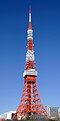
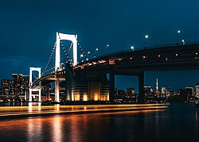
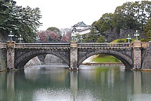

Tóquio, oficialmente Metrópole de Tóquio (東京都, Tōkyō-to), é a capital do Japão e uma das 47 prefeituras do país. Situa-se em Honshu, a maior ilha do arquipélago. Em 2015, Tóquio possuía mais de 13,4 milhões de habitantes, cerca de 11% da população do país, e a Região Metropolitana de Tóquio possui mais de 37 milhões de habitantes, o que torna a aglomeração de Tóquio, independentemente de como se define, como a área urbana mais populosa do mundo.
Um de seus monumentos mais famosos é a Torre de Tóquio. Foi fundada em 1457, com o nome de Edo ou Yedo. Tornou-se a capital do Império em 1868 com a atual designação. Sofreu grande destruição duas vezes; uma em 1923, quando foi atingida por um terremoto; e outra em 1944 e 1945, quando bombardeios americanos destruíram grande parte da cidade, sendo que no total foi destruída 51% de sua área[3] e mortas mais de 80 mil pessoas.
Fonte: Página de Tóquio na Wikipédia


